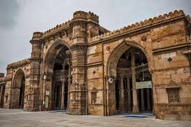

Heritage
Popular Heritage Destinations In India
A land resounding with the riches and glories of opulent dynasties, powerful rulers, flourishing civilisations and profound history, India has a splendid heritage that is reflected in its architecture, monuments, arts, crafts, cultures and even religions. While formidable forts, ancient temples and grand palaces testify of the grandeur of times gone by, the various museums and galleries scattered across the country act as inventories of India's seamless past. Such is the magnificence of the structures in the country that UNESCO has identified several of them as heritage sites.
Ahmedabad

Declared as India's first UNESCO World Heritage City, Ahmedabad or
Amdavad is steeped in history and tradition. Offering a seamless
blend of spectacular architecture of centuries-old mosques and
contemporary avant-garde design.
Jodhpur

With a sea of sapphire-blue painted houses and guarded by the
gorgeous Mehrangarh Fort, the city of Jodhpur, the second-largest in
Rajasthan, is an architectural marvel.
Udaipur

Popularly known as the City of Lakes, serene Udaipur is the crowning
jewel of royal Rajasthan. With shimmering lakes visible from almost
every rooftop.